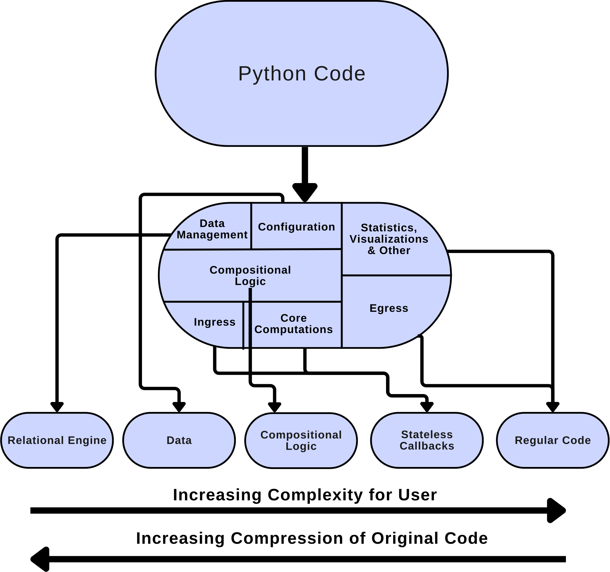

In this tutorial, we will guide you through the process of refactoring an existing data pipeline into the spannerlib framework, showing the utility of this approach from a software engineering perspective. We will:
Give an overview of the original implementation
Discuss the use case we chose this use case
Show how to analyze which parts of a python codebase should turn into one of the following modalities:
Relational Data
Declarative Code
IE functions (and Aggregation functions)
Regular python code along side spannerlib
Demonstrate a rewriting of the use-case into spannerlib
Compare between the original and the spannerlib implementations along the following metrics
Here is a summary of the lines of code of the original and the spannerlib implementations:
Code Type
Complexity
Original
Spannerlib
line code saved
Data as Code
Medium-Low
3903
0
~90%
Data
Low
378
Vanilla python
High
639
118
~53%
Callbacks
Medium
76
Spannerlog
Medium
79
Total
4542
651
~85%
But why does this work?

The reason our approach works is that not all code, and not all python code is born the same. In a python code base, nearby code chunks can do very different things, ie: * configuration * data management * pipeline composition * etc
The reason that spannerlib can help improve code bases is that it forces the user to explicitly decompose the different code types, and for many of them, it provides a programming modality that is more suited for the code base.
The most noteable examples are: * that we can express our compositional logic via Spannerlog * We can seperate core computations from state management * we can delegate State and Data Management to a relational DB
This paradigm forces as to enforce best practices on our code, and turbo charges different modalities with programming languages/paradigms that are well suited to them.
Walkthrough
Problem definition
Given:
A collection of medical documents
Classify each document to one of three classes:
POS/NEG/UNK
According to whether the document describes the patient as having/not having/neither covid-19.
Structure of the original implemenation
The pipeline was implemented using the [spacy] and [medspacy] frameworks, which are libraries build for rule base NLP pipelines. The original pipeline is split into 6 main components:
concept tagger:
Assigns a semantic tags to each Token based on textual patterns that involve regex like patterns, over regular text, POS tags and lemmas.
target matcher:
Assigns higher level tags to entities and covid 19 mentions based on patterns over the semantic tags from the previous versions
sectionizer:
Segments the text into different sections found commonly in medical report, and differentiate between relevant and non relevant sections
context:
modifies semantic attributes of entities and covid 19 such as positive status, negation, reference to entities which are not the patient etc
these modification depends on
patterns over text and semantic tags found in the same sentence as the entitiy
the sections that the entity is in
postprocessor:
Another phase of entity tag modification which was added later on
Modifications depend on either
patterns found in the next sentence after the entity
patterns found on entities which already have specific tags
document classifier:
assigning each covid mention a classification based on it’s associated tags
assigning each document a label of “POS”, “UNK”, or “NEG” based on the tags of the covid-19 mentions within it.
We will explain about each stage in more details, including code snippets later on.
Why we chose this use-case
We are interested in giving a fair comparison between a real world NLP pipeline and our approach. This paper represents a real world NLP usecase in the pre-LLM era, which demonstrates how to combine NLP models and business logic via rules. The Code is ~4000 lines of code which is big enough to not be considered a toy example, but is small enough to allow us to present it’s decomposition in a timely fashion.
Moreover, most of the orchestration logic in this pipeline is done using spacy’s compositional SDK. This means that we do not compare ourselves to control flow written in vanilla python, which might be an easy goal to beat, but rather a compositional SDK that is well tuned to this task, making our proof of burden harder. While the usage of a compositional SDK, as opposed to vanilla python in the original implementation, makes the original implementation shorter than it would otherwise have been, most pipeline libraries have a relatively high barrier of entry, and require the user to learn multiple interfaces and classes that are unique to that library.
This tradeoff elucidates the power and elegance of spannerlib’s use of the relational model explicitly for data modelling. If indeed our implementation will be shorter and simpler, while avoiding the need to learn abstractions found in current compositional libraries, this will mean that our approach sits closer to the pareto frontier on the tradeoff between conciseness and entry barriers.
Finally, not all operations in this pipeline can be modelled as IE function and declarative code. Rather than choosing an example that neatly fits our paradigm, we showcase how regular python code can interplay with spannerlib code when only part of a codebase is suitable to refactoring.
Deepdive on the original implementation:
Concept Tagger
The concept tagger module defines a collection of rules that can be used to tag certain tokens in the text. A basic rule looks like
Where TargetRule is a medspacy class which maps a given pattern to a tag (ie COVID-19)
The Target pattern belongs to a spacy specific pattern language, which may include lemma tags, POS tags, group membership and more, and has a non neglible learning cost.
Here are some examples of rules that use Lemmas and POS in them:
# using lemma and group membershipTargetRule("results positive","positive", pattern=[ {"LOWER": "results"}, {"LEMMA": "be", "OP": "?"}, {"LOWER": {"IN": ["pos", "positive"]}}, ], )# using POS and group membershipTargetRule("other experiencer", category="other_experiencer", pattern=[ {"POS": {"IN": ["NOUN", "PROPN", "PRON", "ADJ"]},"LOWER": {"IN": ["someone","somebody","person","anyone","anybody", ] }, } ], ),
Thi module contains ~327 lines of code which comprise of only dict of the form {tag:[TargetRule]}.
Target Matcher
The Targer Matcher module defines a collection of target rules that also use the tags defined in the previous module. These 2 modules are seperated since they must run sequentially, unlike rules in each module, which can run in parallel. They use the same TargetRule. For example:
# uses the concept tags 'positive' and 'COVID-19' from the concept taggerTargetRule("<POSITIVE> <COVID-19> unit","COVID-19", pattern=[ {"_": {"concept_tag": "positive"}, "OP": "+"}, {"_": {"concept_tag": "COVID-19"}, "OP": "+"}, {"LOWER": {"IN": ["unit", "floor"]}}, ], )
This module contains ~726 lines of code with the same form as the concept matcher {tag:[TargetRule]}.
Sectionizer
The Sectionizer module contains a list of SectionRule classes which outline which text literals should be taken as starting tokens for a new section. They are used by spacy’s pipeline SDK to seperate the documents into different sections and subsequently work on the sections separately. For example:
# section rules that describe possible starting tokens for the imaging sections SectionRule(category="imaging", literal="IMAGING:"), SectionRule(category="imaging", literal="INTERPRETATION:"), SectionRule(category="imaging", literal="Imaging:"), SectionRule(category="imaging", literal="MRI:"), SectionRule(category="imaging", literal="Radiology:"),
This module contains ~116 lines of code which are just a list of SectionRules.
Context
The context module is in charge of adding tags to entities, depending on what other patterns are found in the same sentence as the covid match. This id done by defining a list of ConTextRule classes which outline which pattern to look for, around which existing tags. For example, bellow is a rule that looks for covid mentions that are preceded in the same sentence by “not detected”. And in such cases adds the tag NEGATED_EXISTENCE to the mention.
ConTextRule( literal="Not Detected", category="NEGATED_EXISTENCE",# direction defines whether to try to match the pattern before or after the entity in question direction="BACKWARD", pattern=[ {"LOWER": {"IN": ["not", "non"]}}, {"IS_SPACE": True, "OP": "*"}, {"TEXT": "-", "OP": "?"}, {"LOWER": {"REGEX": "detecte?d"}}, ],# allowed types defines which entities to apply the context search for, based on which tags they have.# in this case we only try to match these patterns around COVID-19 mentions. allowed_types={"COVID-19"},),
ConTextRules also allow to define callbacks that will run on matches and remove the match if necessary. In this example, a callback function defined by the authors of the original imlementation is run on the matches, and removes them if they dont fit more nuanced criteria.
This module contains ~2370 lines of code comprise of a list of ConTextRules and ~208 lines of callback functions that are used in some of the rules.
PostProccessor
This module does changes the tags of some entities depending on custom logic, that cannot be addressed by the spacy ecosystem. spacy does allow to add this custom logic using a nested strucutre of PostprocessingRule and Postprocessing pattern. For example, the following remove a coronavirus entity if ‘denies’ and ‘contact’ are in the same sentence as the entity.
Based on our analysis of the code, the postprocessing rules, together with their custom logic, come in 3 flavors: * rules that are based on sentence context alone * these are similar to the context rules, like the example shown above. * rules based on the context of the sentence after the entity * rules based on the context of the sentece and of other tags given to the entity in previous matches.
Here are examples of the latter two flavors:
# if the covid mention was previously tagged with DEFINITE_POSITIVE_EXISTENCE but the sentence contains words like "should"# then we tag the mention as uncertain.PostprocessingRule( patterns=[ PostprocessingPattern(lambda ent: ent.label_ =="COVID-19"), PostprocessingPattern( postprocessing_functions.is_modified_by_category, condition_args=("DEFINITE_POSITIVE_EXISTENCE",), ), PostprocessingPattern( postprocessing_functions.sentence_contains, condition_args=( {"should","unless","either","if comes back","if returns","if s?he tests positive", },True, ), ), ], action=set_is_uncertain, action_args=(True,),)# If a test does not have any results within the same sentence, check the next sentence.PostprocessingRule( patterns=[ PostprocessingPattern(lambda ent: ent.label_ =="COVID-19"), PostprocessingPattern( postprocessing_functions.is_modified_by_category, condition_args=("test",), ), PostprocessingPattern(has_positive, success_value=False), ( PostprocessingPattern( next_sentence_contains, condition_args=("results? (are|is) positive",), ), PostprocessingPattern( next_sentence_contains, condition_args=("results pos[^s]",) ), ), ], action=set_is_positive, action_args=(True,),)
This module has ~364 lines of PostProcessingRule definitions and ~84 lines of custom logic python functions.
Document classifier
This module classifies the document based on the tags given to covid mentions. It is comprised out of ~77 lines of vanilla python code.
Additional code
There are ~270 more lines of code that are comprised of the main pipline logic, which loads all the modules and run the pipeline, and some utility functions.
Lines of Code overview
We purposefully vanilla python code from the different Rule classes which act as “Data as Code”. We will come back to this point in the analysis bellow.
Section
CodeType
~#lines of code
Concept Tagger
TargetRule
327
Target Matcher
TargetRule
726
Sectionizer
SectionRule
116
Context
ConTextRule
2370
Vanilla Python
208
Post Processing
PostProcessingRule
364
Vanilla Python
84
Document Classifier
Vanilla Python
77
Other
Vanilla Python
270
Total
4542
Rules for our implemenation and notes on line of code comparisons
To make our comparison fair, we have some key guidelines for our implementations, and a note on the line of code measures. First, we must note that the lines of code measured above include whitespace or lines with parenthesis that is used to make the code more readable.
We do not format the original code using formatting tools that try to squeeze more logic into more lines since that hurt readability and essentially hacks the measure of lines of code.
In our implementation we do not skim on whitespace or comments when it helps readability and count our lines of code including it as well.
Some additional guidelines:
We do not use any other libraries other than the libraries used by the original project (such as spacy) and python standard libraries.
This is done to ensure that we do not “beat” the original implementation due to more sophisticated tool use, beyond the spannerlib framework of course.
Please also note that while the line of code comparison is the best quantitative analysis we could perform, the true strength of the spannerlib approach doesn’t come simply from line of code reduction, but from other software engineering concerns which we will go into bellow.
In the step by step implementation, we include some debugging statements and tests to help explain the code. However most of that is not part of the pipeline, in the end to end implementation section we will leave only the actual implementation of the pipeline.
When trying to design a conceptual pipeline, or refactor an existing codebase using spannerlib, best practices dictate that we should first start off with several questions to help us understand what parts of our code should turn into spannerlib code:
What basic computational building blocks do we need?
This does not include things like:
compositional control flow
dataclasses and other OOP hierarchies that are used for data modelling
Constructs that help manage and inspect program state
etc …
This does include
low level numerical/textual analysis
data ingestion from external sources
What in our code is not strictly data processing? for example:
statistics and visualizations
logging or publishing of results
Getting user input in an interactive system.
What data processing pipeline cannot, or is not easy to express via our declerative language?
such as operations that need to extract entire relations at once from other relations, without being able to be mapped to tuple level extractions.
Or operations that do not fit set semantics and require ordering.
Operations that do not fit the relational paradigm well, for example graph analytics.
Note that these points are not a limitation of the spannerlib paradigm but of the very limited declarative language we chose to extend (Datalog).
The spannerlib approach can be extended to any declarative language, including non relational ones.
Like any programming process, you might not get the final answer on the first attempt but these questions help narrow down the design space.
In our case, the basic computational building blocks are:
basic textual analysis tools like pattern matching and splitting of text
Available through the spannerlib’s std library
Some primitive NLP tasks such as:
sentence boundary detection
POS tagging
Lemmatization
This is strictly a text processing pipeline, so there are no statistics etc involved
There is no obvious operation that do not fit, but as we will see once we do our data modelling, there are operations that do not fit Spannerlog.
Defining our ie functions
Based on this analysis, we can already start building our IE functions:
We will use regex based ie functions form the standard library
rgx_split for splitting text based on delimeter patterns
We will implement using spacy
POS extraction
LEMMA extraction
Sentence boundary detection
Exported source
def split_sentence(text):""" Splits a text into individual sentences. using spacy's sentence detection. Returns: str: Individual sentences extracted from the input text. """ doc = nlp(str(text)) start =0for sentence in doc.sents: end = start+len(sentence.text)# note that we yield a Span object, so we can keep track of the locations of the sentencesyield Span(text,start,end) start = end +1
text = (input_dir/'sample1.txt').read_text()
assertlist(split_sentence(text)) == ['Patient presents to be tested for COVID-19.','His wife recently tested positive for novel coronavirus.','SARS-COV-2 results came back positive.']list(split_sentence(text))
Note that for both Lemmas and POS, the original pipeline is only interested in a very small subsets of lemmas and POS. We could take two approaches here: 1. Generate all POS and Lemmas and filter them declaratively 2. Configure our extractors to only extract the information we know we may want.
Since our rgx functions output all relevant matches as Spans, we will demonstrate the second approach here.
Exported source
class LemmaFromList():def__init__(self,lemma_list):self.lemma_list = lemma_listdef__call__(self,text): doc = nlp(str(text))for word in doc: start = word.idx end = start +len(word.text)if word.lemma_ inself.lemma_list:yield (Span(text,start,end),word.lemma_)elif word.like_num:yield (Span(text,start,end),'like_num')else:passlemma_list = (data_dir/'lemma_words.txt').read_text().split()lemmatizer = LemmaFromList(lemma_list)
assertlist(lemmatizer('the boy was sick')) == [("was","be")]
Exported source
class PosFromList():def__init__(self,pos_list):self.pos_list = pos_listdef__call__(self,text): doc = nlp(str(text))for word in doc: start = word.idx end = start +len(word.text)if word.pos_ inself.pos_list:yield (Span(text,start,end),word.pos_)pos_annotator = PosFromList(["NOUN", "PROPN", "PRON", "ADJ"])
Now we have an idea of the building blocks we would have at our disposal. Once we have that, the next thing we need to think about it how we will model our data. Specifically, we can ask four guiding questions:
How do we get our input data, is it relational or close to it?
What does our output data look like, is it relational or close to it?
What parts of our code can be turned into data?
Are there any computations that require, or are currently based on data models that are not relational?
In our case, the answer to the first 3 question are pretty simple:
We get a directory of text files, we can model that as a (path,text) relation.
We want a classification of files, we can model that as a (path,label) relation.
All the different Rule Data Classes stand a good chance of being convertible to relational data.
ie SectionRules are labelled text delimeters
ContextRules seem like they can be turned into regexes or at most serialized and stored as data.
However, question number 4 is more tricky. To understand why, please note that while the pattern attributes of rules look very similar to regular expressions which work on a character level, spacy’s data model works on Word level, and the patterns look not only at the raw text but at token tags, either Lemma, POS or tags defined by the user.
This poses a little bit of a challenge, and likely stems from the fact that this solution was built using spacy in an ad-hoc manner. Spannerlib, can work on relations over all pythonic types (though relational modelling using primitives and Spans is recommended). This means that we have 2 approaches we can choose to take:
We can build based on spacy, a word level, tag aware regex pattern matcher
this could be cool but would basically be rebuilding parts of spacy, which would overfit to the current implementatio and is a classical example of the XY fallacy in code redesign.
See if we can remodel this problem using classical textual information extraction ideas.
Unsurprisingly, we will choose the second approach, even though it will cause us to have some computations that are not supported by Spannerlog.
A detour into text rewrtting
To understand our approach, we must first note that the sequential nature of this pipeline, like many other NLP pipelines, means that we extract tags of entities using patterns, and then reduce our natural language problem to a problem over the tags and not the original text. For example, after normalizing sars COV 2 and novel corona virus to COVID-19, we do not care what the original form of the tag was, we can simply continue analyzing the text as if COVID-19 was there all along.
This aspect of our pipeline leads us to a well known pattern of “text rewriting”. In this pattern, we have several phases of span/tag extractions, which are then used to rewrite the original text to a simplified form, followed by possible other rewriting iterations, before the final text form in generated for mining.
However, we must note that text rewriting does not fit the limitation of Spannerlog for several reasons:
text rewriting at its most basic takes an original text, and a table of (from,to) pairs and generating a new text.
This means that rewriting requires the context of an entire table to perform, which does not fit the tuple->relation paradigm of datalog
rewriting the text as a string requires sorting of the from spans
Does this, mean that our attempted refactoring a failure? Of course not :)
As per the spannerlib framework, the bi directional interaction between Spannerlog and regular python code does not need to be done in a single iteration. What we need is to simply stratify our pipeline and our documents into different versions, and interleave rewritting of new versions with information extraction of tags from the previous version. To do this we need to implement some rewriting logic.
Exported source
def rewrite(text,span_label_pairs):"""rewrites a string given a dataframe with spans and the string to rewrite them to assumes that the spans belong to the text Args: text (str like): string to rewrite span_label_pairs (pd.Dataframe) dataframe with two columns, first is spans in the doc to rewrite second is what to rewrite to Returns: The rewritten string """ifisinstance(text,Span): text = text.as_str() span_label_pairs =sorted(list(span_label_pairs.itertuples(index=False,name=None)), key=lambda x: x[0].start) rewritten_text ='' current_pos =0for span,label in span_label_pairs: rewritten_text += text[current_pos:span.start] + label current_pos = span.end rewritten_text += text[current_pos:]return rewritten_text
text ='the boy was sick'replace_span_with = pd.DataFrame(lemmatizer(text))display(replace_span_with.map(repr))res = rewrite(text,replace_span_with) assert res =='the boy be sick'
0
1
0
[@6a488f,8,11) "was"
'be'
doc = Span('hello darkness my old friend, I come ...',name='doc')spans_to_replace = pd.DataFrame([ [doc.slice(18,21),'young'], [doc.slice(22,28),'nemesis'],])spans_to_replace.map(repr)
0
1
0
[@doc,18,21) "old"
'young'
1
[@doc,22,28) "friend"
'nemesis'
rewritten_doc=rewrite(doc,spans_to_replace)assert rewritten_doc =='hello darkness my young nemesis, I come ...'rewritten_doc
'hello darkness my young nemesis, I come ...'
Resuming data modelling
So after resolving the matter of patten matching on tags, we can model our documents and rules as follows:
Documents will be modelled by Docs(Path,Text,Version)
Concept Tagger Rules will be modelled by ConceptTagRules(pattern,tag,textVersion)
where the version is either lemma or POS for lemma and pos based pattern respectively (there are no patterns that require both)
Target Matcher Rules will be modelled by TargetTagRules(pattern,tag)
Section delimiters and section relevancy will be modelled by SectionTags(Pattern,Tag) and PositiveSectionTags(Tag).
Context Rules will be modelled by SentenceContextRules(pattern,tag,DisambiguationPattern)
Where we would like to tag a pattern of the sentence doesnt have any matches of DisambiguationPattern
As for PostprocessRules, the 3 different flavors can be modelled differently
rules based on sentence context alone are modelled by PostprocessPatternRules(pattern,tag)
rules based on sentence context and existing tags are modelled by PostprocessRulesWithAttributes(pattern,old_tag,new_tag)
where instead of removing a mention or deleting a tag, which is not something you can or want to do declaratively, we will simply add a new tag whose semantic is to disregard the mention or the old tag.
rules based on the next sentence are modelled by NextSentencePostprocessPatternRules(pattern,tag)
All patterns mentioned above are regex patterns using python’s regex flavour.
A note on data modelling and schema design
The same operations we know and love from relational schema design, such as schema normalization and schema merging etc can be applied to data modelling in the spannerlib framework. For example, we could have, to limit the number of Postprocessing Rule relations, merged their schema by adding an ANY tag that matches any pattern and changing building a single relation of the form ProsProcessRule(pattern,old_tag,new_tag,is_next_sentence). This would have lead to less relations and less Spannerlog rules, but the remaining rules would have been slightly more complex. Such tradeoffs are analogous to tradeoffs, in regular code design, between amount, length and complexity of functions.
Lets see this in action:
Looking at the rule files
for query in ["?ConceptTagRules(Pattern,Tag,TextType)","?TargetTagRules(Pattern,Tag)","?SectionTags(Pattern,Tag)","?PositiveSectionTags(Tag)","?SentenceContextRules(Pattern,Tag,DisambiguationPattern)","?PostprocessPatternRules(Pattern,Tag)","?PostprocessRulesWithAttributes(Pattern,Old_Tag,New_Tag)","?NextSentencePostprocessPatternRules(Pattern,Tag)", ]: res = sess.export(query) display(query) display(len(res)) display(res[:3])
patient presents to be tested for COVID-19. His wife recently tested positive for novel coronavirus. SARS-COV-2 results came back positive.
[@4d073b,0,7) "patient"
patient
sample1.txt
patient presents to be tested for COVID-19. His wife recently tested positive for novel coronavirus. SARS-COV-2 results came back positive.
[@4d073b,34,42) "COVID-19"
COVID-19
sample1.txt
patient presents to be tested for COVID-19. His wife recently tested positive for novel coronavirus. SARS-COV-2 results came back positive.
[@4d073b,69,77) "positive"
positive
sample1.txt
patient presents to be tested for COVID-19. His wife recently tested positive for novel coronavirus. SARS-COV-2 results came back positive.
[@4d073b,82,99) "novel coro..."
COVID-19
sample1.txt
patient presents to be tested for COVID-19. His wife recently tested positive for novel coronavirus. SARS-COV-2 results came back positive.
[@4d073b,101,111) "SARS-COV-2"
COVID-19
sample1.txt
patient presents to be tested for COVID-19. His wife recently tested positive for novel coronavirus. SARS-COV-2 results came back positive.
[@4d073b,130,138) "positive"
positive
sample10.txt
patient be screened for cov-19. results came back positive.
[@f3a9fd,0,7) "patient"
patient
sample10.txt
patient be screened for cov-19. results came back positive.
[@f3a9fd,50,58) "positive"
positive
sample2.txt
The patient be tested for Coronavirus like_num. Results be positive. patient underwent no Coronavirus like_num education.
[@a5d37d,4,11) "patient"
patient
sample2.txt
The patient be tested for Coronavirus like_num. Results be positive. patient underwent no Coronavirus like_num education.
[@a5d37d,26,37) "Coronaviru..."
COVID-19
sample2.txt
The patient be tested for Coronavirus like_num. Results be positive. patient underwent no Coronavirus like_num education.
[@a5d37d,59,67) "positive"
positive
sample2.txt
The patient be tested for Coronavirus like_num. Results be positive. patient underwent no Coronavirus like_num education.
[@a5d37d,69,76) "patient"
patient
sample2.txt
The patient be tested for Coronavirus like_num. Results be positive. patient underwent no Coronavirus like_num education.
[@a5d37d,90,101) "Coronaviru..."
COVID-19
sample3.txt
Problem List: like_num. Pneumonia like_num. Novel Coronavirus like_num
[@389fbb,44,61) "Novel Coro..."
COVID-19
sample4.txt
neg covid education.
[@3ac307,4,9) "covid"
COVID-19
sample5.txt
positive covid precaution.
[@2e40a3,0,8) "positive"
positive
sample5.txt
positive covid precaution.
[@2e40a3,9,14) "covid"
COVID-19
sample6.txt
The patient have reported novel coronavirus.
[@2473a3,4,11) "patient"
patient
sample6.txt
The patient have reported novel coronavirus.
[@2473a3,26,43) "novel coro..."
COVID-19
sample8.txt
Patient be sent for a covid test. Someone be tested positive.
[@2893ce,0,7) "Patient"
patient
sample8.txt
Patient be sent for a covid test. Someone be tested positive.
[@2893ce,22,27) "covid"
COVID-19
sample8.txt
Patient be sent for a covid test. Someone be tested positive.
[@2893ce,52,60) "positive"
positive
sample9.txt
Patient have contact patient with coronavirus. screening positive coronavirus.
[@539a7c,0,7) "Patient"
patient
sample9.txt
Patient have contact patient with coronavirus. screening positive coronavirus.
[@539a7c,21,28) "patient"
patient
sample9.txt
Patient have contact patient with coronavirus. screening positive coronavirus.
[@539a7c,34,45) "coronaviru..."
COVID-19
sample9.txt
Patient have contact patient with coronavirus. screening positive coronavirus.
[@539a7c,57,65) "positive"
positive
sample9.txt
Patient have contact patient with coronavirus. screening positive coronavirus.
[@539a7c,66,77) "coronaviru..."
COVID-19
?Docs("sample2.txt",D,V)
'?Docs("sample2.txt",D,V)'
D
V
The patient be tested for COVID-19 like_num. Results be positive. patient underwent no COVID-19 like_num education.
lemma_concept
The patient be tested for Coronavirus like_num. Results be positive. patient underwent no Coronavirus like_num education.
lemma
The patient was tested for Coronavirus 2019. Results are positive. Patient underwent no Coronavirus 2019 education.
raw_text
# here we get the spans of all POSPos(P,D,Word,Lem)<-Docs(P,D,"lemma_concept"),pos(D)->(Word,Lem).?Pos("sample8.txt",D,Word,Lem)
'?Pos("sample8.txt",D,Word,Lem)'
D
Word
Lem
patient be sent for a COVID-19 test. Someone be tested positive.
[@1edc3c,0,7) "patient"
NOUN
patient be sent for a COVID-19 test. Someone be tested positive.
[@1edc3c,22,30) "COVID-19"
NOUN
patient be sent for a COVID-19 test. Someone be tested positive.
[@1edc3c,31,35) "test"
NOUN
patient be sent for a COVID-19 test. Someone be tested positive.
[@1edc3c,37,44) "Someone"
PRON
patient be sent for a COVID-19 test. Someone be tested positive.
[@1edc3c,55,63) "positive"
ADJ
# here we look for concept rule matches where the matched word is also tagged via POSPosConceptMatches(Path,Doc,Span,Label) <- Docs(Path,Doc,"lemma_concept"), ConceptTagRules(Pattern, Label, "pos"), rgx(Pattern,Doc) -> (Span), Pos(Path,Doc,Span,POSLabel).
As we can see for example in sample8.txt, Someone changed to other_experiencer.
Now that we have finished rewriting our documents, lets look at the rewritting of the example
for doc,doc_type in sess.export('?Docs("sample9.txt",D,V)').itertuples(index=False,name=None):print(doc_type)print(doc)print("="*80)
raw_text
Patient had contact patient with coronavirus. screening positive coronavirus.
================================================================================
lemma
Patient have contact patient with coronavirus. screening positive coronavirus.
================================================================================
target_concept
patient have contact patient with COVID-19. positive coronavirus screening.
================================================================================
lemma_concept
patient have contact patient with COVID-19. screening positive COVID-19.
================================================================================
pos_concept
patient have contact patient with COVID-19. screening positive COVID-19.
================================================================================
Splitting text by sentence and section
We have now finished our rewriting, This section replaces the sectionizer, and the parts of the context and postprocessing sections that deal with sentence splitting logic.
Breaking text into sections
# we get section spans and their content using our regex pattern and the rgx_split ie functionSections(P,D,Sec,Content)<-Docs(P,D,"target_concept"), rgx_split($section_delimeter_pattern,D)->(SecSpan,Content), as_str(SecSpan)->(Sec).?Sections(P,D,Sec,Content)PositiveSections(P,D,Sec,Content)<-Sections(P,D,Sec,Content),SectionTags(Sec,Tag),PositiveSectionTags(Tag).?PositiveSections(P,D,Sec,Content)
'?Sections(P,D,Sec,Content)'
P
D
Sec
Content
sample3.txt
Problem List: like_num. Pneumonia like_num. COVID-19 like_num
Problem List:
[@882253,13,62) " like_num...."
'?PositiveSections(P,D,Sec,Content)'
P
D
Sec
Content
sample3.txt
Problem List: like_num. Pneumonia like_num. COVID-19 like_num
The weakness in this approach is that we had build an IE function to do the extraction from scratch, obfuscating the fact that it and the split_sentence ie function share some logic. In our case since generating adjacent pairs is simple using itertools, this wasn’t so bad.
Generate pairs declaratively, and build a filter ie function
def is_adjacent(span1,span2):yield span1.doc==span2.doc and span1.end +1== span2.startsess.register('is_adjacent',is_adjacent,[Span,Span],[bool])
This is simpler than the first alternative, and we get to reuse the Sent rules, however it might seem a little bother some to implement and register an ie function for every so called “WHERE” clause we would like to implement.
Third alternative, a generic boolean expression evaluator
This alternative used a cheeky ie function from the standard library called expr_eval that lets us evaluate simple pythonic expression by writing them in a format similar to python’s format strings. This ie function is quite useful for replacing simple filters but becomes error prone for large complex expressions.
Tagging Covid Mentions
Next we will tag covid mentions based on their context. This section replaces the rest of the Context and postprocessing rules
# first we get the covid mentions and their surrounding sentences, using the span_contained ie functionCovidMentions(Path, Span) <- Docs(Path,D,"target_concept"), rgx("COVID-19",D) -> (Span).CovidMentionSents(P,Mention,Sent)<-CovidMentions(P,Mention),Sents(P,Sent),span_contained(Mention,Sent)->(True).?CovidMentions(Path, Span)?CovidMentionSents(P,Mention,Sent)
'?CovidMentions(Path,Span)'
Path
Span
sample1.txt
[@931cb5,34,42) "COVID-19"
sample1.txt
[@931cb5,84,92) "COVID-19"
sample1.txt
[@931cb5,94,102) "COVID-19"
sample2.txt
[@e4b074,26,34) "COVID-19"
sample2.txt
[@e4b074,87,95) "COVID-19"
sample3.txt
[@882253,44,52) "COVID-19"
sample4.txt
[@77c574,4,12) "COVID-19"
sample5.txt
[@ffb7c7,9,17) "COVID-19"
sample6.txt
[@b2612f,26,34) "COVID-19"
sample8.txt
[@3db2e4,22,30) "COVID-19"
sample9.txt
[@6d2862,34,42) "COVID-19"
'?CovidMentionSents(P,Mention,Sent)'
P
Mention
Sent
sample1.txt
[@931cb5,34,42) "COVID-19"
[@931cb5,0,43) "patient pr..."
sample1.txt
[@931cb5,84,92) "COVID-19"
[@931cb5,44,93) "His family..."
sample1.txt
[@931cb5,94,102) "COVID-19"
[@931cb5,94,130) "COVID-19 r..."
sample2.txt
[@e4b074,26,34) "COVID-19"
[@e4b074,0,44) "The patien..."
sample2.txt
[@e4b074,87,95) "COVID-19"
[@e4b074,66,115) "patient un..."
sample3.txt
[@882253,44,52) "COVID-19"
[@882253,44,61) "COVID-19 l..."
sample4.txt
[@77c574,4,12) "COVID-19"
[@77c574,0,23) "neg COVID-..."
sample5.txt
[@ffb7c7,9,17) "COVID-19"
[@ffb7c7,0,29) "positive C..."
sample6.txt
[@b2612f,26,34) "COVID-19"
[@b2612f,0,35) "The patien..."
sample8.txt
[@3db2e4,22,30) "COVID-19"
[@3db2e4,0,36) "patient be..."
sample9.txt
[@6d2862,34,42) "COVID-19"
[@6d2862,0,43) "patient ha..."
Now we define how to derive covid tags using sections, context and the different postprocessing rule types. Notice how easy it is to convey complex control flow that combines multiple data sources elegantly using Spannerlog.
# note that for ease of debugging, we extended our head to track which rule a fact was derived from# a tag is positive if it is contained in a positive sectionCovidTags(Path,Mention,'positive','section')<- PositiveSections(Path,D,Title,Section), CovidMentions(Path,Mention), span_contained(Mention,Section)->(True).# Context rules tagsCovidTags(Path,Mention,Tag,'sentence context')<- CovidMentionSents(Path,Mention,Sent), SentenceContextRules(Pattern,Tag,DisambiguationPattern), rgx(Pattern,Sent)->(ContextSpan), span_contained(Mention,ContextSpan)->(True), rgx_is_match(DisambiguationPattern,Sent)->(False).# post processing based on patternCovidTags(Path,Mention,Tag,'post pattern')<- CovidMentionSents(Path,Mention,Sent), PostprocessPatternRules(Pattern,Tag), rgx(Pattern,Sent)->(ContextSpan), span_contained(Mention,ContextSpan)->(True).# post processing based on pattern and existing attributes# notice the recursive call to CovidTagsCovidTags(Path,Mention,Tag,"post attribute change")<- CovidTags(Path,Mention,OldTag,Derivation), PostprocessRulesWithAttributes(Pattern,OldTag,Tag), CovidMentionSents(Path,Mention,Sent), rgx(Pattern,Sent)->(ContextSpan), span_contained(Mention,ContextSpan)->(True).# post processing based on pattern in the next sentenceCovidTags(Path,Mention,Tag,"next sentence")<- CovidMentionSents(Path,Mention,Sent), SentPairs(Path,Sent,NextSent), PostprocessPatternRules(Pattern,Tag), rgx(Pattern,NextSent)->(ContextSpan).?CovidTags(Path,Mention,Tag,Derivation)
'?CovidTags(Path,Mention,Tag,Derivation)'
Path
Mention
Tag
Derivation
sample1.txt
[@931cb5,84,92) "COVID-19"
negated
sentence context
sample1.txt
[@931cb5,84,92) "COVID-19"
positive
sentence context
sample1.txt
[@931cb5,94,102) "COVID-19"
positive
sentence context
sample2.txt
[@e4b074,87,95) "COVID-19"
IGNORE
post pattern
sample2.txt
[@e4b074,87,95) "COVID-19"
future
sentence context
sample2.txt
[@e4b074,87,95) "COVID-19"
negated
sentence context
sample3.txt
[@882253,44,52) "COVID-19"
positive
section
sample4.txt
[@77c574,4,12) "COVID-19"
IGNORE
post pattern
sample4.txt
[@77c574,4,12) "COVID-19"
future
sentence context
sample4.txt
[@77c574,4,12) "COVID-19"
negated
sentence context
sample5.txt
[@ffb7c7,9,17) "COVID-19"
future
sentence context
sample5.txt
[@ffb7c7,9,17) "COVID-19"
no_future
post attribute change
sample5.txt
[@ffb7c7,9,17) "COVID-19"
positive
sentence context
sample6.txt
[@b2612f,26,34) "COVID-19"
patient_experiencer
sentence context
Document Classificaiton
In the following section we will aggregate tags on mentions into document classification in two stages, aggregation of tags per mention and aggregation of mentions per document. This section replaces the document classification state in the original pipeline.
At this step, we assign a classification result ‘UNK’ to paths not identified in the previous DataFrame result. This occurs when our pipeline doesn’t detect any mention of COVID-19 or its synonyms in the text of those paths. As a result, these paths are excluded from all types of relations, consistent with our primary focus on COVID-19 entities.
And with this we have completed the pipeline. In the next section we will look at the entire code base, compare lines of code and analyze the advantages of the spannerlib implementation form a software engineering perspective.
%%spannerlogLemmas(P,D,Word,Lem)<-Docs(P,D,"raw_text"),lemma(D)->(Word,Lem)LemmaConceptMatches(Path,Doc,Span,Label) <-\ Docs(Path,Doc,"lemma"),\ ConceptTagRules(Pattern, Label, "lemma"),\ rgx(Pattern,Doc) -> (Span)# here we get the spans of all POSPos(P,D,Word,Lem)<-Docs(P,D,"lemma_concept"),pos(D)->(Word,Lem)# here we look for concept rule matches where the matched word is also tagged via POSPosConceptMatches(Path,Doc,Span,Label) <-\ Docs(Path,Doc,"lemma_concept"),\ ConceptTagRules(Pattern, Label, "pos"),\ rgx(Pattern,Doc) -> (Span),\ Pos(Path,Doc,Span,POSLabel)TargetMatches(Path,Doc, Span, Label) <-\ Docs(Path,Doc,"pos_concept"),\ TargetTagRules(Pattern, Label), rgx(Pattern,Doc) -> (Span)# we get section spans and their content using our regex pattern and the rgx_split ie functionSections(P,D,Sec,Content)<-Docs(P,D,"target_concept"),\ rgx_split($section_delimeter_pattern,D)->(SecSpan,Content),\ as_str(SecSpan)->(Sec)PositiveSections(P,D,Sec,Content)<-Sections(P,D,Sec,Content),SectionTags(Sec,Tag),PositiveSectionTags(Tag)Sents(P,S)<-Docs(P,D,"target_concept"),split_sentence(D)->(S)SentPairs(P,S1,S2)<-Sents(P,S1),Sents(P,S2),expr_eval("{0}.end +1 == {1}.start",S1,S2)->(True)# first we get the covid mentions and their surrounding sentences, using the span_contained ie functionCovidMentions(Path, Span) <- Docs(Path,D,"target_concept"), rgx("COVID-19",D) -> (Span)CovidMentionSents(P,Mention,Sent)<-CovidMentions(P,Mention),Sents(P,Sent),span_contained(Mention,Sent)->(True)# note that for ease of debugging, we extended our head to track which rule a fact was derived from# a tag is positive if it is contained in a positive sectionCovidTags(Path,Mention,'positive','section')<-\ PositiveSections(Path,D,Title,Section),\ CovidMentions(Path,Mention),\ span_contained(Mention,Section)->(True)# Context rules tagsCovidTags(Path,Mention,Tag,'sentence context')<-\ CovidMentionSents(Path,Mention,Sent),\ SentenceContextRules(Pattern,Tag,DisambiguationPattern),\ rgx(Pattern,Sent)->(ContextSpan),\ span_contained(Mention,ContextSpan)->(True),\ rgx_is_match(DisambiguationPattern,Sent)->(False)# post processing based on patternCovidTags(Path,Mention,Tag,'post pattern')<-\ CovidMentionSents(Path,Mention,Sent),\ PostprocessPatternRules(Pattern,Tag),\ rgx(Pattern,Sent)->(ContextSpan),\ span_contained(Mention,ContextSpan)->(True)# post processing based on pattern and existing attributes# notice the recursive call to CovidTagsCovidTags(Path,Mention,Tag,"post attribute change")<-\ CovidTags(Path,Mention,OldTag,Derivation),\ PostprocessRulesWithAttributes(Pattern,OldTag,Tag),\ CovidMentionSents(Path,Mention,Sent),\ rgx(Pattern,Sent)->(ContextSpan),\ span_contained(Mention,ContextSpan)->(True)# post processing based on pattern in the next sentenceCovidTags(Path,Mention,Tag,"next sentence")<-\ CovidMentionSents(Path,Mention,Sent),\ SentPairs(Path,Sent,NextSent),\ PostprocessPatternRules(Pattern,Tag),\ rgx(Pattern,NextSent)->(ContextSpan)AggregatedCovidTags(Path,Mention,agg_mention(Tag))<-\ CovidTags(Path,Mention,Tag,Derivation)DocumentTags(Path,agg_doc_tags(Tag))<-\ AggregatedCovidTags(Path,Mention,Tag)
IE and Agg functions:
def split_sentence(text):""" Splits a text into individual sentences. using spacy's sentence detection. Returns: str: Individual sentences extracted from the input text. """ doc = nlp(str(text)) start =0for sentence in doc.sents: end = start+len(sentence.text)# note that we yield a Span object, so we can keep track of the locations of the sentencesyield Span(text,start,end) start = end +1class LemmaFromList():def__init__(self,lemma_list):self.lemma_list = lemma_listdef__call__(self,text): doc = nlp(str(text))for word in doc: start = word.idx end = start +len(word.text)if word.lemma_ inself.lemma_list:yield (Span(text,start,end),word.lemma_)elif word.like_num:yield (Span(text,start,end),'like_num')else:passlemma_list = (data_dir/'lemma_words.txt').read_text().split()lemmatizer = LemmaFromList(lemma_list)class PosFromList():def__init__(self,pos_list):self.pos_list = pos_listdef__call__(self,text): doc = nlp(str(text))for word in doc: start = word.idx end = start +len(word.text)if word.pos_ inself.pos_list:yield (Span(text,start,end),word.pos_)pos_annotator = PosFromList(["NOUN", "PROPN", "PRON", "ADJ"])def agg_mention(group):""" aggregates attribute groups of covid spans """if'IGNORE'in group.values:return'IGNORE'elif'negated'in group.values andnot'no_negated'in group.values:return'negated'elif'future'in group.values andnot'no_future'in group.values:return'negated'elif'other experiencer'in group.values or'not relevant'in group.values:return'negated'elif'positive'in group.values andnot'uncertain'in group.values andnot'no_positive'in group.values:return'positive'else:return'uncertain'def AggDocumentTags(group):""" Classifies a document as 'POS', 'UNK', or 'NEG' based on COVID-19 attributes. """if'positive'in group.values:return'POS'elif'uncertain'in group.values:return'UNK'elif'negated'in group.values:return'NEG'else:return'UNK'
Regular python utilities
def rewrite(text,span_label_pairs):"""rewrites a string given a dataframe with spans and the string to rewrite them to assumes that the spans belong to the text Args: text (str like): string to rewrite span_label_pairs (pd.Dataframe) dataframe with two columns, first is spans in the doc to rewrite second is what to rewrite to Returns: The rewritten string """ifisinstance(text,Span): text = text.as_str() span_label_pairs =sorted(list(span_label_pairs.itertuples(index=False,name=None)), key=lambda x: x[0].start) rewritten_text ='' current_pos =0for span,label in span_label_pairs: rewritten_text += text[current_pos:span.start] + label current_pos = span.end rewritten_text += text[current_pos:]return rewritten_textdef rewrite_docs(docs,span_label,new_version):"""Given a dataframe of documents of the form (path,doc,version) and a dataframe of spans to rewrite of the form (path,word,from_span,to_tag), rewrites the documents and returns a new dataframe of the form (path,doc,new_version) """ new_tuples =[] span_label.columns = ['P','D','W','L']for path,doc,_ in docs.itertuples(index=False,name=None): span_label_per_doc = span_label[span_label['P'] == path][['W','L']] new_text = rewrite(doc,span_label_per_doc) new_tuples.append((path,new_text,new_version))return pd.DataFrame(new_tuples,columns=['P','D','V'])
Main pipeline
def main(input_dir,data_dir): sess = Session()# define callback functions sess.register('split_sentence',split_sentence,[(str,Span)],[Span]) sess.register('pos',pos_annotator,[(Span,str)],[Span,str]) sess.register('lemma',lemmatizer,[(Span,str)],[Span,str]) sess.register_agg('agg_mention',agg_mention,[str],[str]) sess.register_agg('agg_doc_tags',AggDocumentTags,[str],[str])# bring in code as data sess.import_rel("ConceptTagRules",data_dir/"concept_tags_rules.csv" , delim=",") sess.import_rel("TargetTagRules",data_dir/"target_rules.csv",delim=",") sess.import_rel("SectionTags",data_dir/"section_tags.csv",delim=",") sess.import_rel("PositiveSectionTags",data_dir/"positive_section_tags.csv",delim=",") sess.import_rel("SentenceContextRules",data_dir/'sentence_context_rules.csv',delim="#") sess.import_rel("PostprocessPatternRules",data_dir/'postprocess_pattern_rules.csv',delim="#") sess.import_rel("PostprocessRulesWithAttributes",data_dir/'postprocess_attributes_rules.csv',delim="#") sess.import_rel("NextSentencePostprocessPatternRules",data_dir/'postprocess_pattern_next_sentence_rules.csv',delim=',')# we will programatically build a regex that matches all the section patterns section_tags = pd.read_csv(data_dir/'section_tags.csv',names=['literal','tag']) section_delimeter_pattern = section_tags['literal'].str.cat(sep='|') sess.import_var('section_delimeter_pattern',section_delimeter_pattern)# bring in data file_paths = [Path(p) for p in glob(str(input_dir/'*.txt'))] raw_docs = pd.DataFrame([ [p.name,p.read_text(),'raw_text'] for p in file_paths ],columns=['Path','Doc','Version'] ) sess.import_rel('Docs',raw_docs)# load logic, note that since we did not define the data relations in the logic file,# we need to load the logic after the data has been loaded sess.export(logic_file.read_text())## Rewritting the documents lemma_tags = sess.export('?Lemmas(P,D,W,L)') lemma_docs = rewrite_docs(raw_docs,lemma_tags,'lemma') sess.import_rel('Docs',lemma_docs) lemma_concept_matches = sess.export('?LemmaConceptMatches(Path,Doc,Span,Label)') lemma_concepts = rewrite_docs(lemma_docs,lemma_concept_matches,'lemma_concept') sess.import_rel('Docs',lemma_concepts) pos_concept_matches = sess.export('?PosConceptMatches(P,D,W,L)') pos_concept_docs = rewrite_docs(lemma_concepts,pos_concept_matches,'pos_concept') sess.import_rel('Docs',pos_concept_docs) target_matches = sess.export('?TargetMatches(P,D,W,L)') target_rule_docs = rewrite_docs(pos_concept_docs,target_matches,'target_concept') sess.import_rel('Docs',target_rule_docs)## computing the tags based on the target concept documents doc_tags = sess.export('?DocumentTags(P,T)')# handling files with no mentions paths = pd.DataFrame([p.name for p in file_paths],columns=['P']) classification = paths.merge(doc_tags,on='P',how='outer') classification['T']=classification['T'].fillna('UNK') classificationreturn classification
Code comparison
Lines of code
Summing the line of code analysis for both implementations we get:
Implementation
Code Type
~#code lines
Original Implementation
Rules Collections
3903
Vanilla Python
639
Spannerlib Implementation
Data
378
IE/AGG functions
76
Spannerlog
80
Vanilla python
118
Overall we see that the different type of rules, which were basically data as code and made up the majority of the code base, shrank by a factor of 10 (~3900 to ~380). Moreover the Vanilla python code, over 600 lines long, shrank to less than 300 lines of code, over half of which were either Spannerlog code, or stateless IE/AGG functions.
Software engineering perspective
In order to
fully appreciate the strengths of the spannerlib framework.
Understand our reasoning behind dividing the code into the four modalities mentioned above in our analysis.
In this section we will refer to our covid pipeline refactoring as an example that helps highlight the benefits of the framework in general.
We will remind the reader of a several important concepts:
Decomposition/Factoring:
The breaking apart of code into parts that are easier to understand, program and maintain
Separation of concerns:
A design principle that states that each section in a code should address a separate concern
The goal of this principle is to make code easier to program and maintain by having the programmer:
required to reason about less concept when working on a section of code.
required to reason about less sections of code when trying to modify an aspect of the program.
Bug surface area:
Is also affected by complexity of the state of the program
Bug surface area is often divided into compile (static) surface area and run time (dynamic) surface area
Looking at static and dynamic surface area separately is important since static bugs can be caught easily using a compiler/interpreter, can be proved to exist/not exist and do not require building tests to catch.
Readability:
A measure of how easy it is to understand code.
Debugability:
A measure of how easy it is to find bugs in a code base.
This measure does not always coincide with readability, for example, multithreaded code is a clear example where the intent of the code might be easy to understand, but the non deterministic nature of the execution will make debugging hard.
Barriers of entry:
The difficulties in programming effectively in an existing codebase that stem from
The technical complexity of the codebase
the learning curve of the specific libraries, concepts or technologies used in the project
So why does it matter how many lines of code per modality an implementation has? Why do we separate vanilla python code from IE functions? Because different modalities (as well as different programming languages) have different costs with respect to:
readability
debugability
and bug surface area
per volume of code (which we approximate via lines of code in this discussion).
This fact is well known across programming languages, for example: A typical python function f is more readable than its C counterpart g, but fs bug surface area is greater even though g will often be much longer. This is mainly due to the fact the C is a statically typed language that chooses to reduce run time bug surface area in favor of less readability.
The same is true to the four different modalities we analyze here:
Code as Data
Declerative Code (and specificall python)
Stateless python code (IE functions)
General python code
As we move up this list, we have more and more freedom, the code
becomes less readable
has a larger bug surface area
and is harder to debug
A csv line’s is much simpler to verify than a line of spannerlog than a line of stateless python than a line of generic python. Put more techincally, the scaling factors of these code measures get worse as we move up the chain.
For this reason, we do not only care how many lines of code we removed from an implementation, but how many lines of code became more readable debugable etc due to a change in modality. The Rules in the original implementation turned into csv files, which are easier to statically verify, making the reduction of overall complexity more substantial than the reduction in lines of code. The regex patterns, per line of code, are harder to read for a human but are easier for a machine to verify the correctness of.
As for the vanilla python code in the original implementation, the reduction of complexity of the code does not simply come from the >2x reduction in lines of code, but comes from the fact that over half of said code in the new implementation is either declarative or stateless. An example of this are the callback functions added to the post processing section.
So programming in the spannerlib framework, when the task can be partially modelled as an IE task, simplifies programming not only by reducing total volume of code, but by reducing the bug surface area, readability and debugability of conceptually simpler code by moving it to an appropriate modality with better scaling factors for these measures.
But there is another advantages to programming in spannerlib, namely:
Better separation of concerns
Better inspectability of state
The separation of spannerlib code into Data, Logic and stateless computation matches 4 distinct concerns in programming, each programmed in a modality suited to it namely:
State management - using relational databases
Data representation - using relation databases
Algorithmic code - using state less IE functions
Business Logic / Compositional Logic - Decleratve language that can orchestrate IE functions.
This separation of concerns make the code better factored but also gives us better tools for common code maintenance tasks:
When we want to reason about program state
Instead of:
inspecting state by going through long runtime inspections using debugger
or changing existing code to add more logging or debugging prints
We can:
query the DB for the state
Example:
our debugging queries that looked at the document’s per version.
Note that even when we used vanilla python code, we still saved the state in spannerlib so we could inspect it
When we want to trace intermediate state, for data provenance
Instead of:
having to add support for this throughout the class hierarchy in our code
or add logs and parse them
We can:
extend the schema of rules to save auxiliary information.
Example:
Adding the Derived from column in the CovidTags relation so we can see where each tuple came from.
When writing algorithmic code,
Instead of
reasoning about state or making decisions about data representation.
We can:
simply find a relational schema that matches
When business logic changes,
changeing the compositional logic of the pipeline but not the core of the product
which is most of the time
Intead of:
having to change both the class structure to support the additional data
and the pipeline code
We can
simply refactor the declarative code, which automatically refactors the data representation with it.
Example:
Adding the PostProcessing Steps
But how much of this is really new?
Spannerlib’s approach while innovative, is combination of several known techniques and approaches in the IE and Programming Languages literature namely:
Which gives describes techniques for reducing repetitive code by:
Using a high level programming language as a composition engine of
A DSL which is suited to the programming domain which
Generates lower level code.
This gives us the Spannerlog in python embedding.
Spannerlib’s innovation comes from several key nuances that reduces the barrier of entry to the benefit of formal IE, and enables it to be used as a generative programming engine for a very wide array of tasks.
We realize, following the IE literature, that declarative query languages, onces paired with imperative callbacks, provide a very generic DSL for function composition, that encompasses a large percentage of pipeline composition code today.
Combining the Generative programming paradigm with formal IE systems.
Unlike existing formal IE systems, like SystemT, we reduce the barrier of entry for new programmers by
reducing the barrier of entry for lay programmers to insert IE functions into our system.
reduce the learning curve for our system by formally extending existing, well known, and simple declarative languages (Datalog).
Improving adoption and developer velocity by
Putting an emphasis on concise interplay and a tiny interface for communicating between the host language (python) and our framework